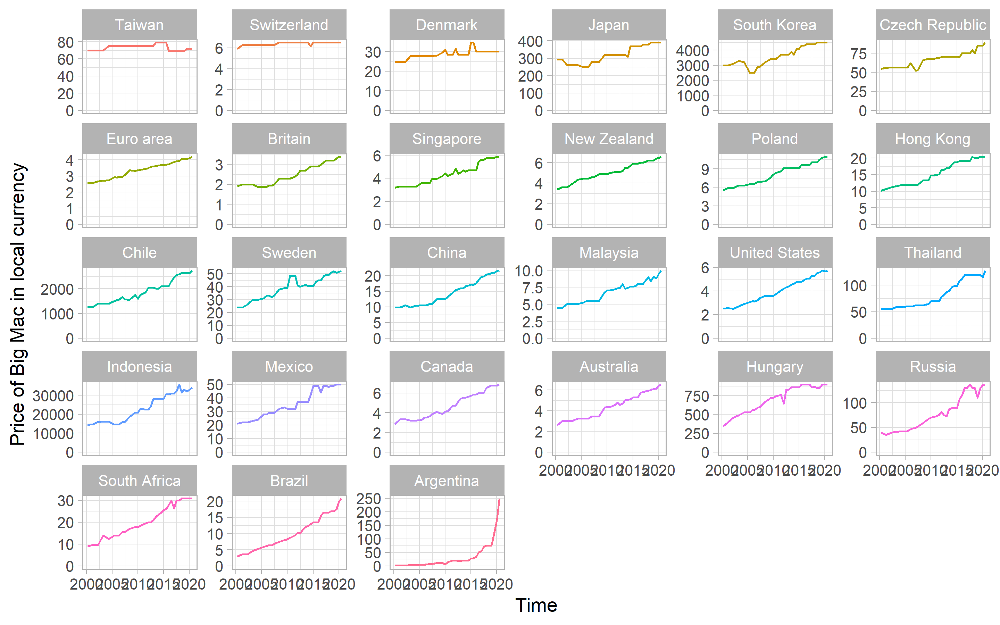
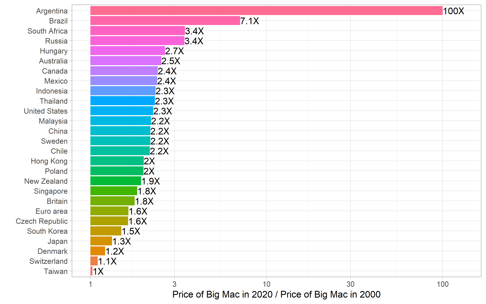
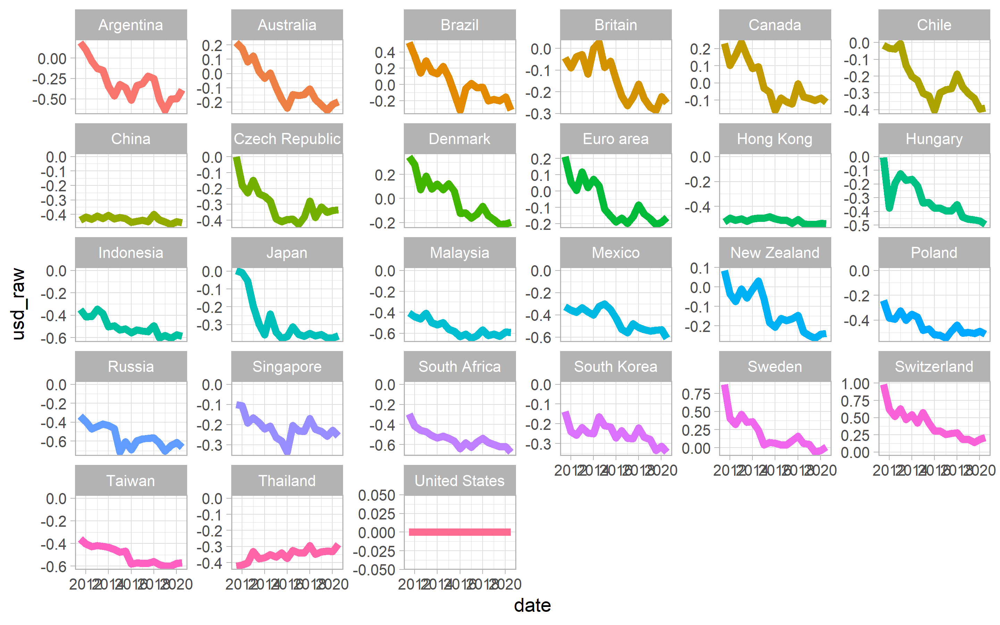
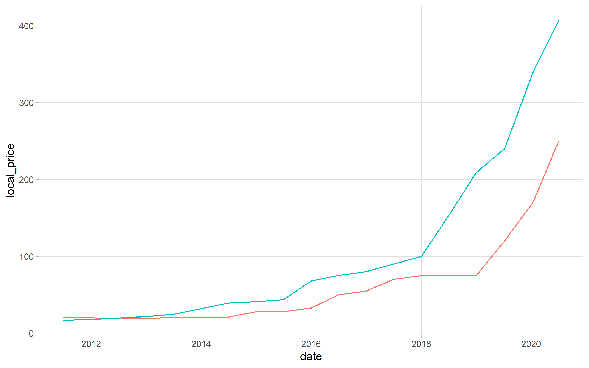
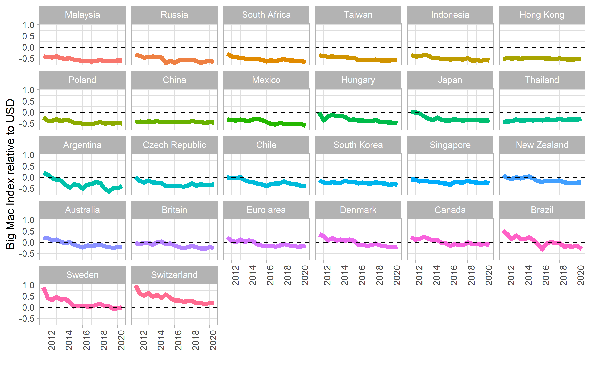
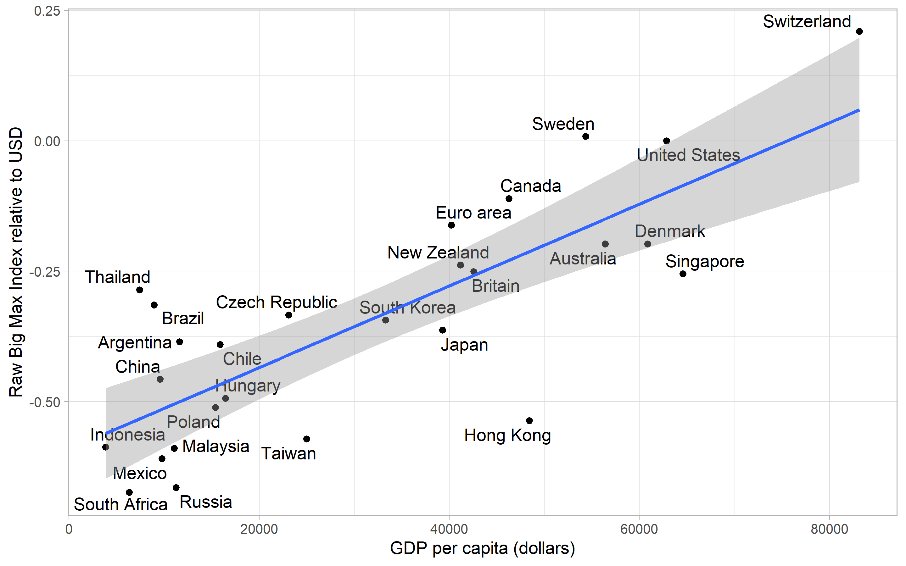
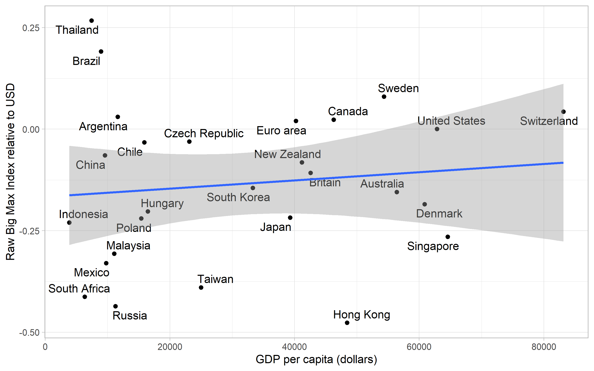
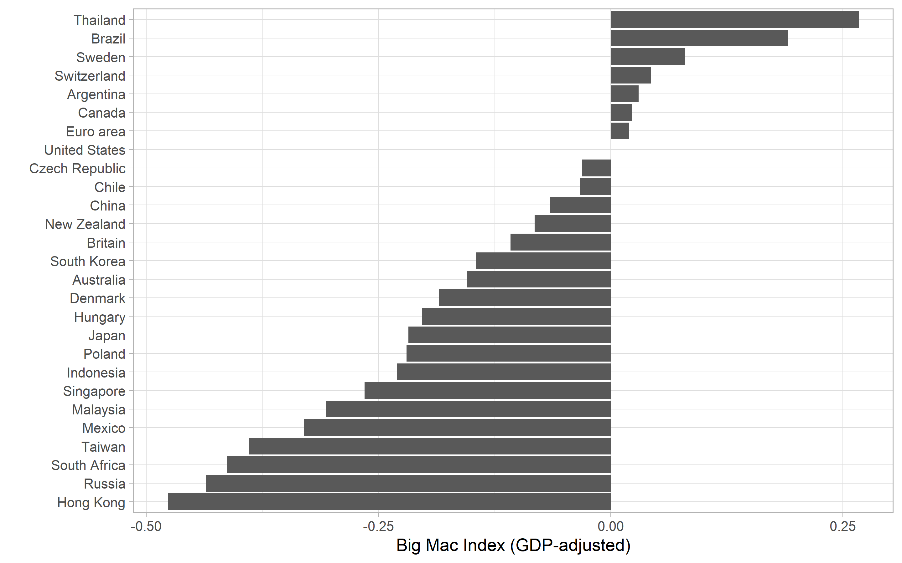

title: ‘Working Tidy with David’ output: html_document
library(tidymodels)
library(tidyverse)
library(GGally)
library(countrycode)
library(scales)
theme_set(theme_light())
library(ggrepel)
library(gganimate)
knitr::opts_chunk$set(echo = T, warning = FALSE, message = FALSE, cache = TRUE, dpi = 180, fig.width = 8, fig.height = 5)
options(scipen = 9999)Coding with David Robinson
David Robinson, the wizard himself
Tidy Tuesday
Reading in data
big_mac <- readr::read_csv('https://raw.githubusercontent.com/rfordatascience/tidytuesday/master/data/2020/2020-12-22/big-mac.csv')
big_mac <- big_mac %>%
rename(country = name) %>%
add_count(country, name = 'country_total') %>%
filter(country_total == max(country_total)) %>%
arrange(country, date) big_mac %>%
mutate(country = fct_reorder(country, local_price,
function(.) last(.) / first(.))) %>%
ggplot(aes(date, local_price, color = country)) +
geom_line() +
facet_wrap( ~country, scales = 'free_y') +
expand_limits(y = 0) +
theme(legend.position = 'none') +
labs(x = 'Time',
y = 'Price of Big Mac in local currency')
big_mac %>%
group_by(country) %>%
summarize(big_mac_inflation = last(local_price) / first(local_price)) %>%
arrange(desc(big_mac_inflation)) %>%
mutate(country = fct_reorder(country, big_mac_inflation)) %>%
ggplot(aes(big_mac_inflation, country, fill = country)) +
geom_col() +
geom_text(aes(label = paste0(round(big_mac_inflation, 1), 'X')), hjust = 0) +
scale_x_log10(breaks = c(1, 3, 10, 30, 100)) +
expand_limits(x = 130) +
labs(x = 'Price of Big Mac in 2020 / Price of Big Mac in 2000', y = '') +
theme(legend.position = 'none')
big_mac %>%
group_by(date) %>%
mutate(usd_price = local_price[iso_a3 == 'USA'],
us_gdp = gdp_dollar[iso_a3 == 'USA']) %>%
ungroup() %>%
mutate(big_mac_ex = local_price / usd_price) %>%
select(date, iso_a3, country, local_price, dollar_ex, usd_price, big_mac_ex, usd_raw, gdp_dollar, us_gdp, usd_adjusted) %>%
mutate(usd_recalculated = (big_mac_ex - dollar_ex) / dollar_ex) %>%
filter(!is.na(gdp_dollar)) %>%
head()## # A tibble: 6 x 12
## date iso_a3 country local_price dollar_ex usd_price big_mac_ex
## <date> <chr> <chr> <dbl> <dbl> <dbl> <dbl>
## 1 2011-07-01 ARG Argent~ 20 4.13 4.07 4.92
## 2 2012-01-01 ARG Argent~ 20 4.31 4.20 4.77
## 3 2012-07-01 ARG Argent~ 19 4.57 4.33 4.39
## 4 2013-01-01 ARG Argent~ 19 4.98 4.37 4.35
## 5 2013-07-01 ARG Argent~ 21 5.41 4.56 4.61
## 6 2014-01-01 ARG Argent~ 21 6.92 4.62 4.54
## # ... with 5 more variables: usd_raw <dbl>, gdp_dollar <dbl>,
## # us_gdp <dbl>, usd_adjusted <dbl>, usd_recalculated <dbl>big_mac %>%
select(date, country, local_price, dollar_ex, usd_raw, gdp_dollar, usd_adjusted) %>%
filter(!is.na(gdp_dollar)) %>%
ggplot(aes(date, usd_raw, color = country)) +
geom_line(size = 2) +
expand_limits(y = 0) +
facet_wrap(~ country, scales = 'free_y') +
theme(legend.position = 'none')
big_mac %>%
group_by(date) %>%
mutate(usd_price = local_price[iso_a3 == 'USA'],
us_gdp = gdp_dollar[iso_a3 == 'USA']) %>%
ungroup() %>%
filter(country == 'Argentina', !is.na(gdp_dollar)) %>%
mutate(price_from_usd = usd_price * dollar_ex) %>%
ggplot(aes(date, local_price)) +
geom_line(aes(color = 'Price (in local currency)')) +
geom_line(aes(y = price_from_usd, color = 'Price From USD')) +
theme(legend.position = 'none')
big_mac %>%
filter(country != 'United States') %>%
select(date, country, local_price, dollar_ex, usd_raw, gdp_dollar, usd_adjusted) %>%
filter(!is.na(gdp_dollar)) %>%
mutate(country = fct_reorder(country, usd_raw)) %>%
ggplot(aes(date, usd_raw, color = country)) +
geom_line(size = 2) +
geom_hline(color = 'black', lty = 2, yintercept = 0) +
expand_limits(y = 0) +
facet_wrap(~ country) +
theme(legend.position = 'none', axis.text.x = element_text(angle =90, hjust =1)) +
labs(y = 'Big Mac Index relative to USD', x ='')
big_mac %>%
filter(date == max(date)) %>%
ggplot(aes(gdp_dollar, usd_raw))+
geom_point() +
geom_text_repel(aes(label = country)) +
geom_smooth(method = 'lm') +
labs(x = 'GDP per capita (dollars)',
y = 'Raw Big Max Index relative to USD')
In indonesia, big Macs are cheaper than you’d expect based on the currency conversion rate. But this isn’t suprisng, becuase for countries with Indonesia’s GDP per capita it’s roughly par for the course. What we’re really interested in are rich countries with cheap big macs or poor countries with expensive big macs, which indicate that a currency is either undervalued or overvalued respectively.
big_mac %>%
filter(date == max(date)) %>%
ggplot(aes(gdp_dollar, usd_adjusted))+
geom_point() +
geom_text_repel(aes(label = country)) +
geom_smooth(method = 'lm') +
labs(x = 'GDP per capita (dollars)',
y = 'Raw Big Max Index relative to USD')
big_mac %>%
filter(date == max(date)) %>%
mutate(country = fct_reorder(country, usd_adjusted)) %>%
ggplot(aes(usd_adjusted, country)) +
geom_col() +
labs(x = 'Big Mac Index (GDP-adjusted)',
y = '')
big_mac %>%
filter(!is.na(gdp_dollar)) %>%
ggplot(aes(gdp_dollar, usd_adjusted))+
geom_point() +
geom_text_repel(aes(label = country)) +
geom_smooth(method = 'lm') +
transition_time(date) +
labs(x = 'GDP per capita (dollars)',
y = 'Raw Big Max Index relative to USD',
title = '{ frame_time }')##
Frame 1 (1%)
Frame 2 (2%)
Frame 3 (3%)
Frame 4 (4%)
Frame 5 (5%)
Frame 6 (6%)
Frame 7 (7%)
Frame 8 (8%)
Frame 9 (9%)
Frame 10 (10%)
Frame 11 (11%)
Frame 12 (12%)
Frame 13 (13%)
Frame 14 (14%)
Frame 15 (15%)
Frame 16 (16%)
Frame 17 (17%)
Frame 18 (18%)
Frame 19 (19%)
Frame 20 (20%)
Frame 21 (21%)
Frame 22 (22%)
Frame 23 (23%)
Frame 24 (24%)
Frame 25 (25%)
Frame 26 (26%)
Frame 27 (27%)
Frame 28 (28%)
Frame 29 (29%)
Frame 30 (30%)
Frame 31 (31%)
Frame 32 (32%)
Frame 33 (33%)
Frame 34 (34%)
Frame 35 (35%)
Frame 36 (36%)
Frame 37 (37%)
Frame 38 (38%)
Frame 39 (39%)
Frame 40 (40%)
Frame 41 (41%)
Frame 42 (42%)
Frame 43 (43%)
Frame 44 (44%)
Frame 45 (45%)
Frame 46 (46%)
Frame 47 (47%)
Frame 48 (48%)
Frame 49 (49%)
Frame 50 (50%)
Frame 51 (51%)
Frame 52 (52%)
Frame 53 (53%)
Frame 54 (54%)
Frame 55 (55%)
Frame 56 (56%)
Frame 57 (57%)
Frame 58 (58%)
Frame 59 (59%)
Frame 60 (60%)
Frame 61 (61%)
Frame 62 (62%)
Frame 63 (63%)
Frame 64 (64%)
Frame 65 (65%)
Frame 66 (66%)
Frame 67 (67%)
Frame 68 (68%)
Frame 69 (69%)
Frame 70 (70%)
Frame 71 (71%)
Frame 72 (72%)
Frame 73 (73%)
Frame 74 (74%)
Frame 75 (75%)
Frame 76 (76%)
Frame 77 (77%)
Frame 78 (78%)
Frame 79 (79%)
Frame 80 (80%)
Frame 81 (81%)
Frame 82 (82%)
Frame 83 (83%)
Frame 84 (84%)
Frame 85 (85%)
Frame 86 (86%)
Frame 87 (87%)
Frame 88 (88%)
Frame 89 (89%)
Frame 90 (90%)
Frame 91 (91%)
Frame 92 (92%)
Frame 93 (93%)
Frame 94 (94%)
Frame 95 (95%)
Frame 96 (96%)
Frame 97 (97%)
Frame 98 (98%)
Frame 99 (99%)
Frame 100 (100%)
## Finalizing encoding... done!